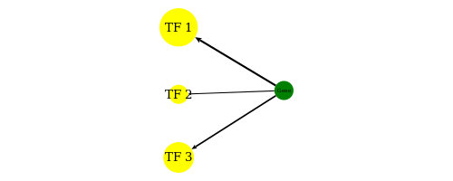

Constructing weighted TF regulatory network
The weighted network enable us to make use of many weak connections which otherwise will be excluded in an unweighted network.
The edge weight is a combination of three factors:
- Peak intensity \(p\), represented by the p-value of a peak, rescaled to \([0, 1]\) by a sigmoid function.
- Motif binding affinity \(m\), represented by the p-value of the motif binding score, rescaled to \([0, 1]\) by a sigmoid function.
- TF expression value \(g\).
If a TF \(i\) has \(n\) binding sites that are linked to gene \(j\), then the edge weight is determined by:
\[e_{ij} = \sqrt{g\sum_{k=1}^n{p_k * m_k}}\]
Computing TF ranks using the PageRank algorithm
Let \(s\) be the vector containing node weights and \(W\) be the edge weight matrix. The personalized PageRank score vector \(v\) was calculated by solving a system of linear equations \(v = (1 − d)s + dWv\), where \(d\) is the damping factor (default to 0.85). The above equation can be solved in an iterative fashion, i.e., setting \(v_{t+1} = (1-d)s + dWv_t\).
Statistical significance of PageRank scores
To determine the statistical significance of PageRank scores, we randomly rewire edges in the network and compute the PageRank scores. We do this 10 times to get enough samples for computing the null distribution. The p-values of PageRank scores were then inferred as to the null distribution.